2019 UNCTF新星赛Web部分及竞技赛未解出的Web部分复现题解
新星赛
happyphp
扫描目录发现备份文件index.php.bak
1 |
|
先通过反序列化读源码，POC：
1 |
|
不过复现环境出了点问题，后面就是读源码拿到上传目录，然后包含上传目录下的一句话图片文件
do_you_like_xml
doLogin.php提交的数据为xml，存在xxe：
1 |
|
不知道网站根目录绝对路径，于是使用伪协议读doLogin.php源码：
1 |
|
同样方法读flag.php
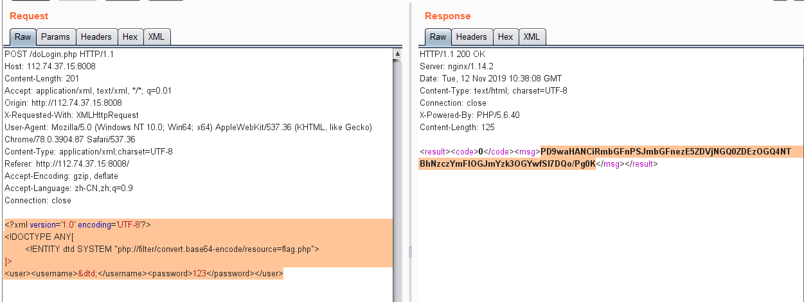
simple_web
robots.txt告诉我们文件getsandbox.php
1 | if (isset($_GET['reset'])) { |
告诉了我们沙箱地址，访问，又得到如下代码：
1 |
|
大致意思是要我们想办法把shell写入到content.php，通过正则匹配替换
但是写入的内容参数content经过addslashes处理，正常情况下无法闭合引号
通过一个特殊的技巧：传入aaa\';eval($_GET[x]);//
测试代码：
1 |
|
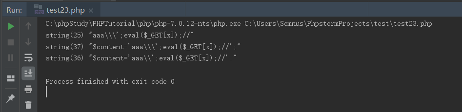
正则匹配替换后，文件内容变成了：
1 | $content='aaa\\';eval($_GET[x]);//'; |
\'经过addslashes()之后变为\\\'，随后preg_replace会将两个连续的\合并为一个，也就是将\\\'转为\\'，这样我们就成功引入了一个单引号，闭合上文注释下文，中间加入要执行的代码即可。
看来是preg_replace函数特性。经测试，该函数会针对反斜线进行转义，即成对出现的两个反斜线合并为一个
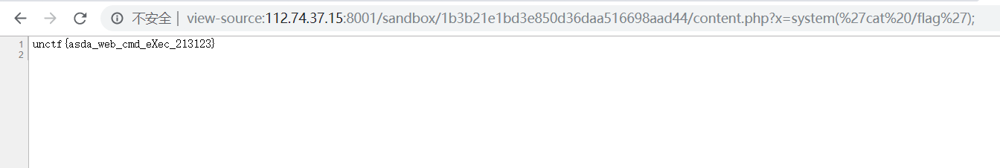
simple_upload
1 |
|
上传题，对文件后缀名和文件类型和文件内容都有过滤，绕过方法：
（1）绕过文件类型：修改Content-type：image/jpeg
（2）绕过文件后缀：文件名可以从$_POST['save_name']中取，且检测的后缀是$file的最后一个元素，后面赋值的文件后缀是$file[count($file) - 1]，于是让save_name[0]=somnus&save_name[2]=php&save_name[3]=jpg，即可绕过
（3）绕过文件内容：<script language='php'>phpinfo();</script>
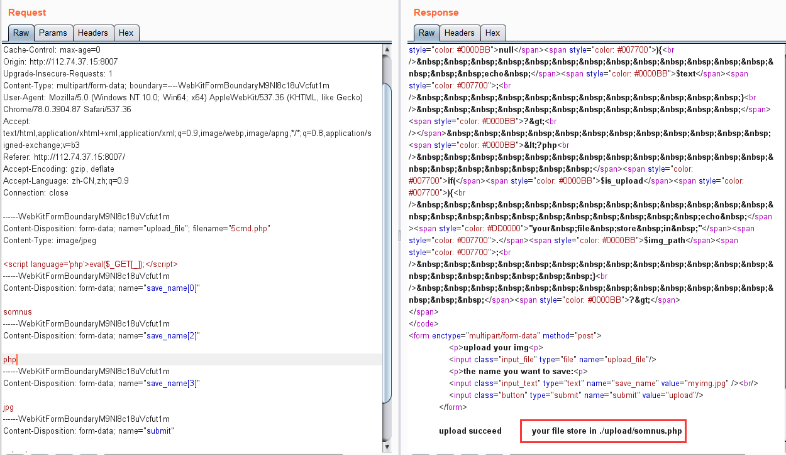
getshell
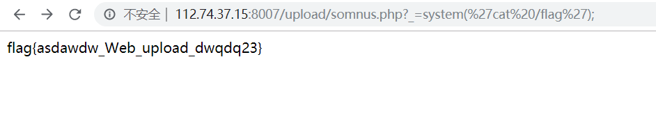
easy_php
1 |
|
rce，过滤点在于参数x中只能有一处()，并且不能带有关键字：$_GET，$_POST，$_COOKIE
最重要的是：
1 | $left = strpos($a, "("); |
测试发现满足的条件是参数中带有：($aacata)
那么就想到了括号外面包裹一个eval，执行参数$aacata
再想办法让参数$aacata为$_GET[b]，用之前suctf异或的方式
payload：
1 | ?x=$aacata=${%a0%b8%ba%ab^%ff%ff%ff%ff}[b];eval($aacata);&b=system(%27cat%20flag%27); |
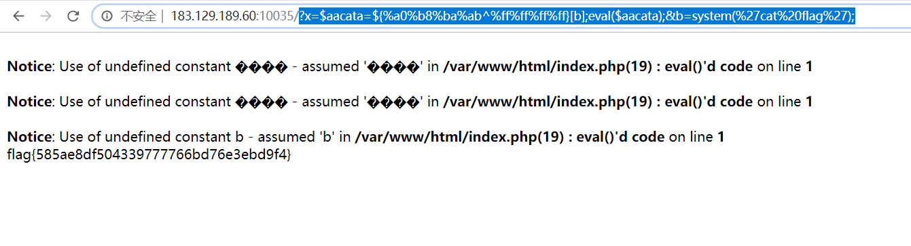
不过想的有点复杂，直接套个system执行命令就行
执行ls：
1 | ?x=system("ls|cat"); |
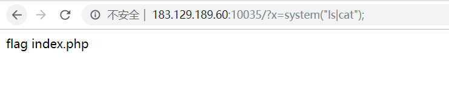
读取flag：
1 | ?x=system("<flag cat"); |
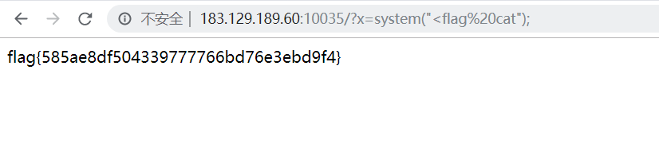
easy_file_manager
打开靶机，是一个登陆和注册页面，注册一个用户后，来到界面：
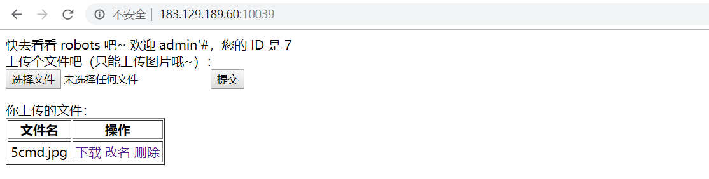
先试着上传一个文件，发现存在后缀名白名单，只能上传图片后缀文件，上传后，页面会显示出我们上传后的文件名，并且download.php提供下载功能，rename.php提供修改文件名的功能，测试发现修改文件名也必须是图片后缀
另外页面提示了我们存在robots.txt
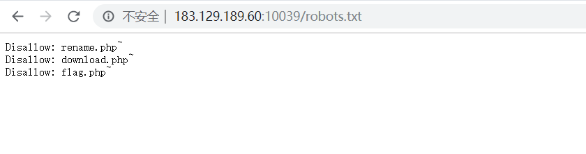
分别访问：rename.php~ download.php~ flag.php~
得到三个页面的源码
审计后发现rename.php存在逻辑漏洞：
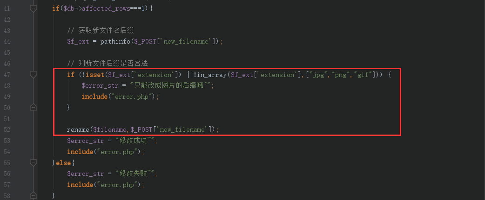
乍看之下，有检测后缀名是否合法，但是即使不合法，也同样执行了rename重命名文件的操作
所以，结合download.php：
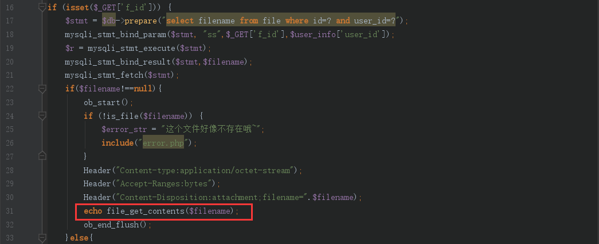
我们先上传一个图片文件，然后将文件名修改为要读取的文件名，从而进行任意文件读取，例如我们要读取index.php
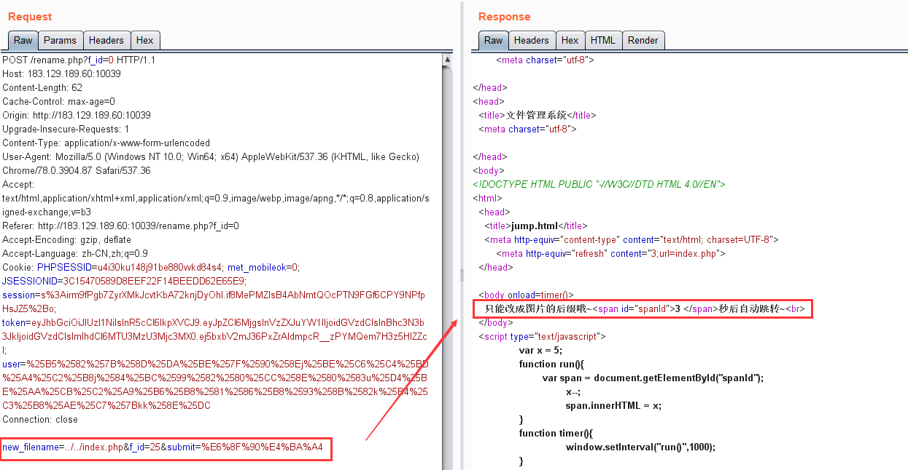
虽然提示只能修改图片后缀，但实际上还是执行了rename进行重命名
这时候进行download下载
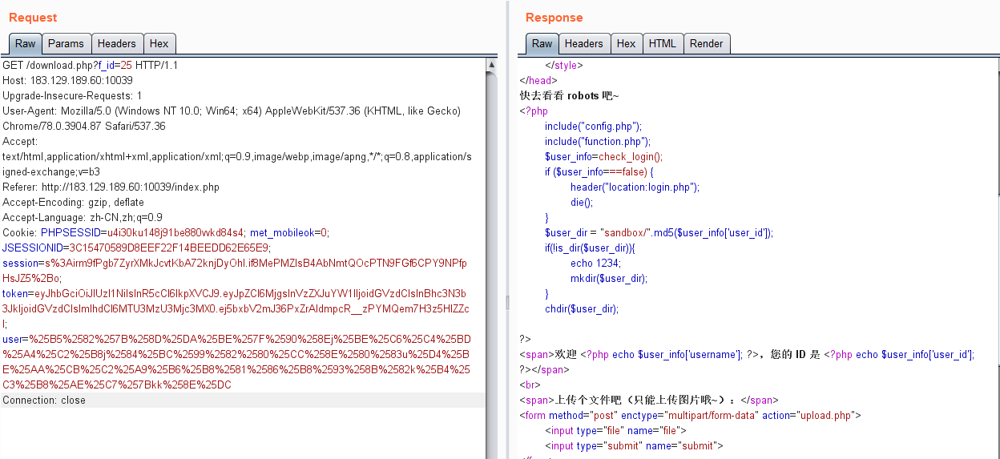
就成功读到了源码，同样方法读取function.php，login.php的源码，这样除了config.php的源码不知道，其他的源码我们都能获得到
然后来看看flag.php中获取flag的条件
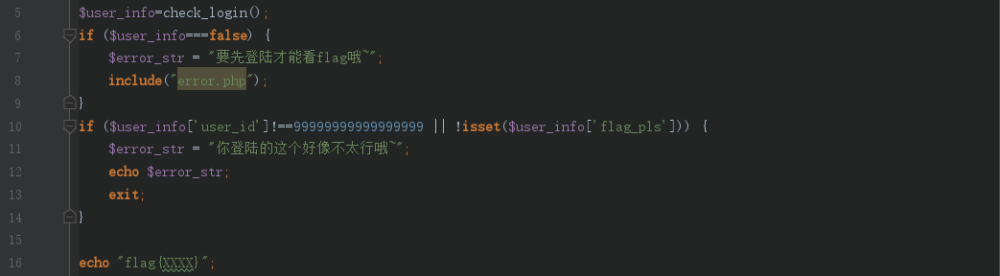
很明显，要获取flag，就需要伪造$user_info
接下来看看check_login()，在function.php中：
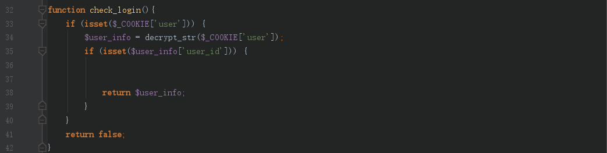
可以发现对cookie中的user字段进行了自定义的函数decrypt_str解密
并且我们可以同时看到加密和解密的函数：

有明文和密文，只是不知道SECRET_KEY，我们可以进行解密得到SECRET_KEY
解密脚本如下：
1 |
|
运行后得到：THIS_KEYTHIS_KEYTHIS_KEYTHIS_KEYTHIS_KEYTHIS_KEYTHIS_
因为是对key进行循环运算，所以SECRET_KEY应该是THIS_KEY
然后就是构造payload了：
1 |
|
特别说明一下，这里的payload在linux和windows上运行得到的结果不同，windows上会把99999999999999999转成浮点数：float(1.0E+17)，导致加密后结果不同。所以，要在linux上运行，才能得到正确的payload
运行得到payload：
1 | %B5%82%7B%8D%DA%BE%7F%90%8Ej%BE%C6%C4%BD%A4%C2%B8j%84%BC%99%84%7E%92%8D%81%82%8C%98%84%7E%92%8D%81%82%8C%98%84%80%CC%8E%80%83u%C5%B7%A6%C0%B3%B8%B5%C6%81%86%AE%93%85%83%C6 |
修改flag.php中的cookie[‘user’]，即可获得flag：
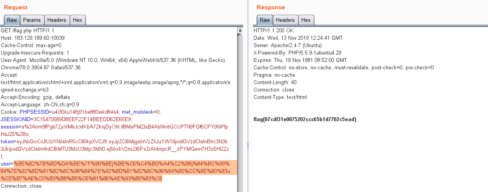
simple_calc_1
打开靶机是一个计算器，试着抓包无反应
查看源码中发现存在/backend/
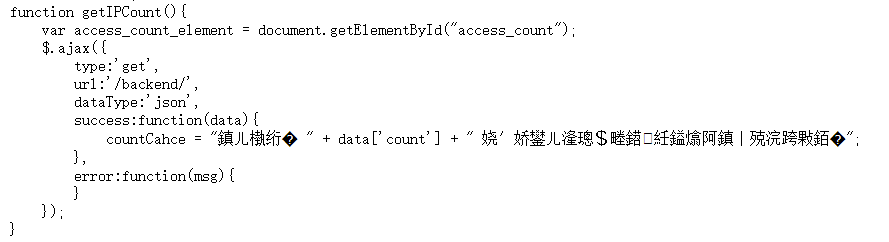
从源码中可以看出，功能是根据IP反馈出查询次数，试着修改XFF，发现存在注入点，当条件为假是查询次数始终为1，exp：
1 | import requests |
最后的flag：flag{G1zj1n_W4nt5_4_91r1_Fr1end},flag{glzjin_wants_a_girl_firend}
simple_calc_2
还是一个计算器，尝试抓包发现/backend/calc.php
猜测存在rce，直接加入引号命令执行，后面加上注释：
1 | cmd=`ls` # |
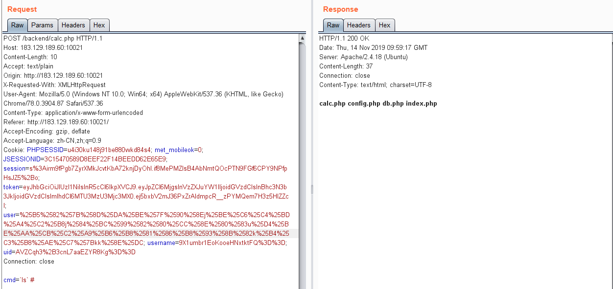
执行成功，看看calc.php的源码：
1 |
|
尝试读取根目录下flag.txt文件，发现没有权限
又没有其他可执行文件，那么只能找一下哪个二进制文件具有suid的权限：
1 | cmd=`find / -user root -perm -4000` # |
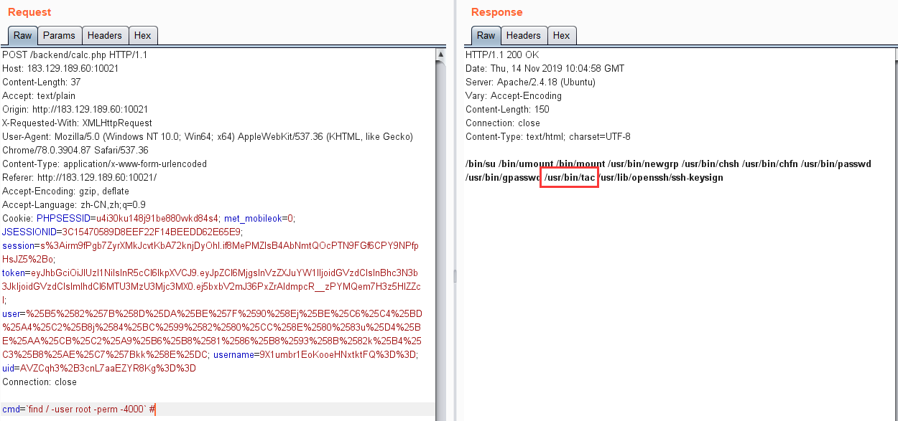
发现tac可以使用，于是用tac读取flag文件：
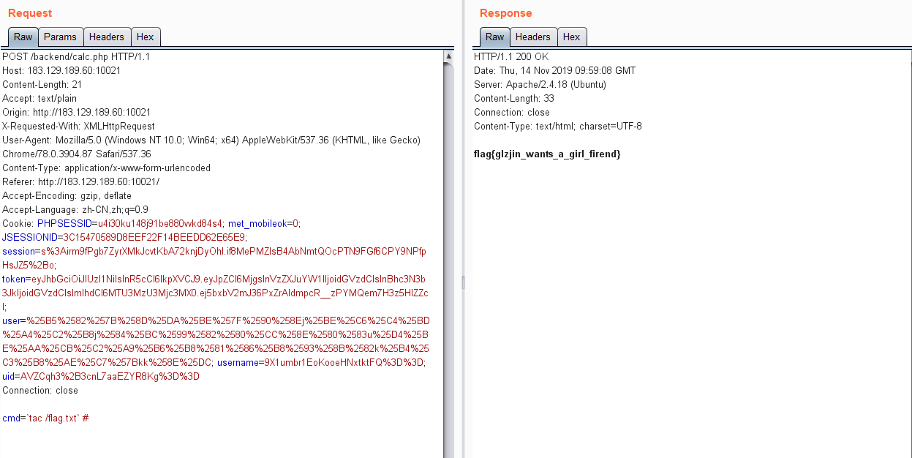
竞技赛
Arbi
读取源码
首先打开靶机，有个登录和注册功能，注册admin失败，注册其他用户后跳转到/home
从注册的响应包头部：X-Powered-By: Express可以看出这是一个nodejs的express框架
登录后，从源码可以看到url：/uri?src=http://127.0.0.1:9000/upload/test.jpg
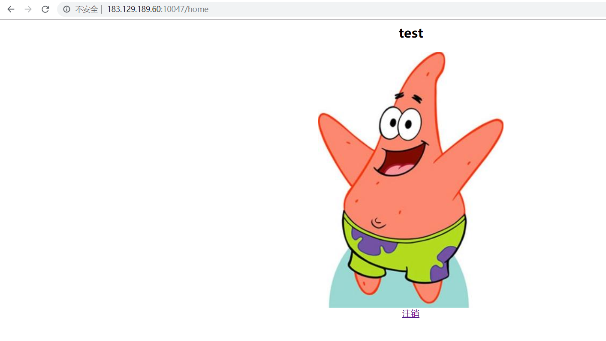
疑似ssrf，这时候就想到了题目的第一个提示：根目录下开启了SimpleHTTPServer服务，我们就可以利用这个服务来读取源码
尝试读取文件，但是发现与我们登录的用户名test绑定了，换成其他的都会变成evil request
所以我们可以注册用户名为我们要读取的文件名，来进行读取源码的操作
而nodejs的入口文件（一般是app.js或者main.js），但是这题都读不到，但是nodejs应用默认存在package.json，我们可以通过读取这个文件获取入口文件
于是我们注册用户名包含：../package.json，但是后面会自动加上后缀名.jpg
这时候就想到了题目的另外一个hint：截断
我们要进行截断无非就是#，或者?，测试发现这里#不行，会报错，?可以成功截断
读取package.json，注册用户名：../package.json?
登录后，访问uri?src=http://127.0.0.1:9000/upload/../package.json?.jpg
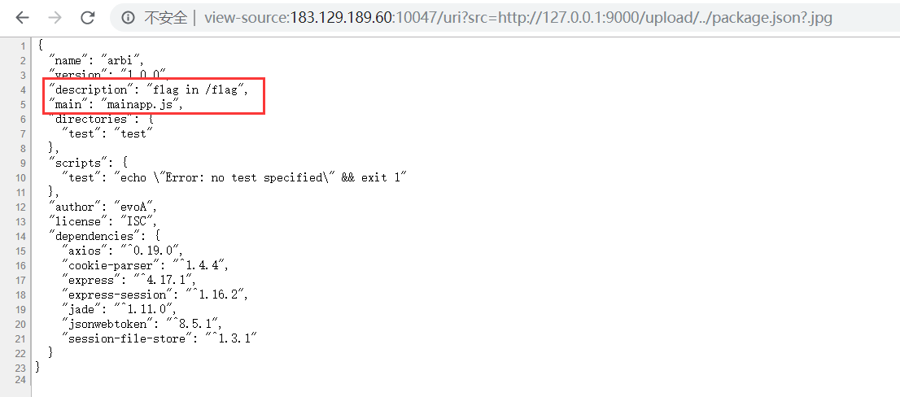
获取到两个有用的信息：
（1）入口文件：mainapp.js
（2）flag文件路径：/flag
然后同样方法，注册用户名：../mainapp.js?读取入口文件
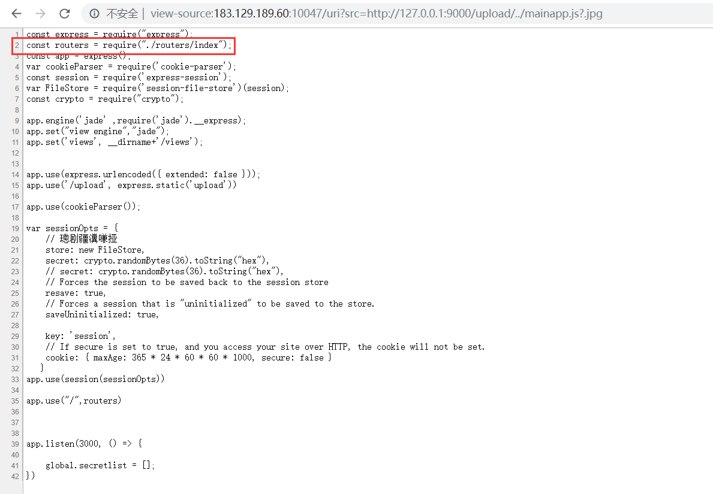
获取到路由文件：/routers/index.js
继续读取：
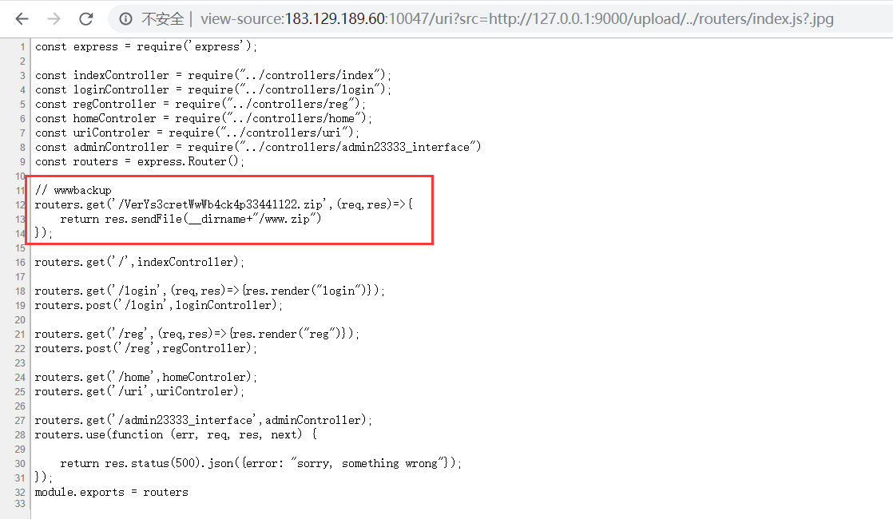
这里出题师傅为了方便，直接给了备份的源码文件：VerYs3cretWwWb4ck4p33441122.zip
根目录下直接访问，获取所有源码
登录admin
审计源码后发现，在admin23333_interface.js文件中有一个读文件的操作：
1 | var content = fs.readFileSync("/etc/"+filename) |
而我们要进入该路由，就必须满足开头的代码：
1 | if(req.session.username !== "admin"){ |
即以admin的身份访问
之前注册登录的时候，我们其实就已经发现了该网站采用了JWT的登陆验证方式，代码如下：
1 | var secret = global.secretlist[id]; |
再看看注册的代码，可以发现，验证用的secret与用户当前的id关联：
1 | var secret = crypto.randomBytes(18).toString("hex"); |
大概的逻辑就是，我们注册一个用户，这个用户就对应一个id，一个id对应一个secret，然后把这个id和secret生成token值存储到cookie中，然后我们登陆时，就会根据token中的id取出secret进行jwt校验
我们要登陆admin，很明显就需要伪造token，这也就对应的一个hint：jwt常见攻击
node 的jsonwebtoken库存在一个缺陷，也是jwt的常见攻击手法，当用户传入jwt secret为空时 jsonwebtoken会采用algorithm none进行解密
所以，我们可以通过传入一个不存在的id来让secret为undefined，再让algorithm为none，从而伪造admind的token值，代码如下：
1 | import jwt |
然后用这个token去登陆admin/123456
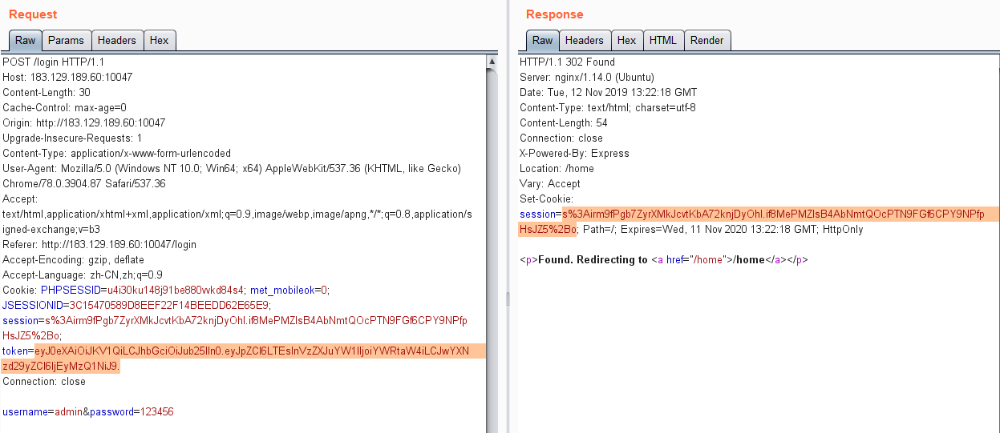
成功登陆admin：
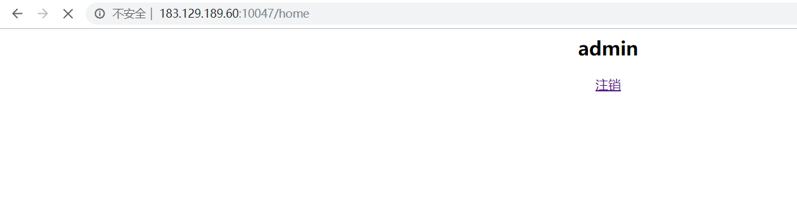
bypass读取flag
登陆admin后，我们就可以访问路由：admin23333_interface
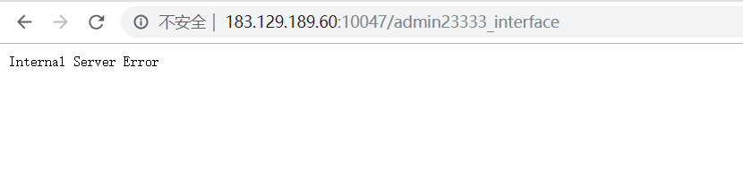
这时候返回的是500
继续审计admin23333_interface.js
1 | if(req.query.name === undefined){ |
需要我们通过get传入参数name
然后我们最后要执行的代码是：
1 | var content = fs.readFileSync("/etc/"+filename) |
filename变量来自于代码段：
1 | var filename = "" |
需要我们在name参数，再包含一个filename参数，而如果我们传入?name={"filename":""}
由于此时name参数类型为字符串，进入判断条件：
1 | else if(typeof(req.query.name) === "string"){ |
进入该条件，则filename必须带有关键字key，否则就返回500错误，而我们要执行最后读取flag文件，最后的filename必须为：../flag
这就需要利用到开头我们发现的express框架的一个特性：当传入?a[b]=1的时候,变量a会自动变成一个对象 a = {"b":1}
所以，我们可以通过传入?name[filename]，从而绕过string类型的过滤
最后，就是让filename最后拼接成../flag了，length不仅仅能取字符串的长度，同样能取数组的长度，同时express 中当碰到两个同名变量时，会把这个变量设置为数组，例如a=123&a=456 解析后 a = [123,456] ，所以，我们只要让多次传入filename参数，让filename参数成为数组，并且元素大于3，其中元素不单单包含关键字.或者/，便可
最终传入payload：
1 | ?name[filename]=../&name[filename]=f&name[filename]=l&name[filename]=a&name[filename]=g |
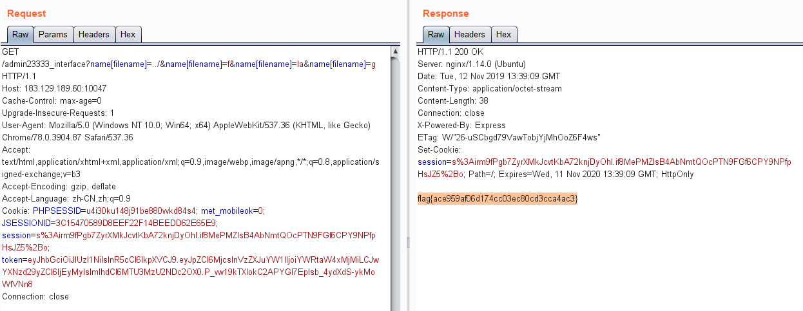
smile_dog
打开靶机，有一个输入框：
尝试输入1，发现会把我们输入的返回到页面上
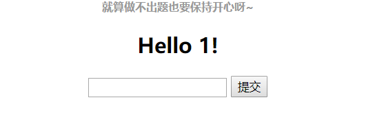
尝试了各种ssti，发现不行，应该不是python的网站
看了wp后才发现居然是ssrf，输入：http://127.0.0.1
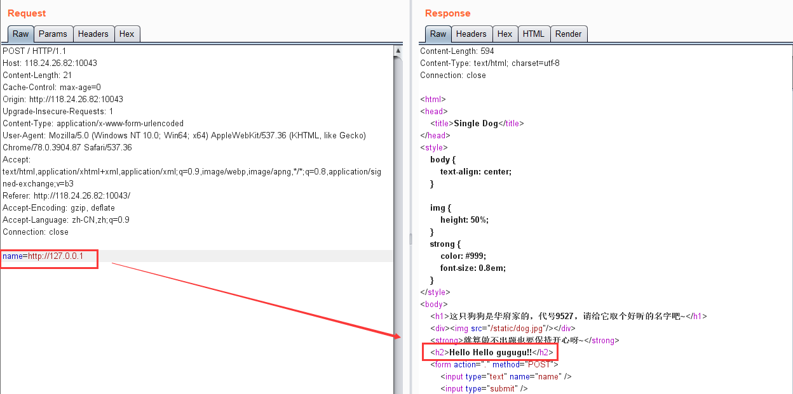
发现返回了原来没有输入值时的Hello gugugu，说明存在ssrf
访问一下自己vps
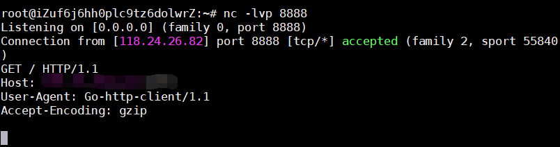
从消息头的User-Agent字段可以发现后端是go语言
同时，扫描后台可以发现存在备份文件：/backup/.index.php.swp
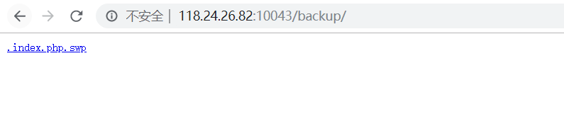
下载下来用vim -r还原后得到部分源码：
1 | <?php |
从源码部分：r.Header.Add("FLAG", FLAG)可以看出flag就藏在头部*http.Request的Header中，Header在结构体名为MyRequest
根据题目的hint：泄露的源码是内网
那么我们首先就需要通过页面输入框的ssrf访问到内网地址，根据页面显示的关键字：代号9527，虽然有点脑洞，不过这告诉我们内网端口就是9527
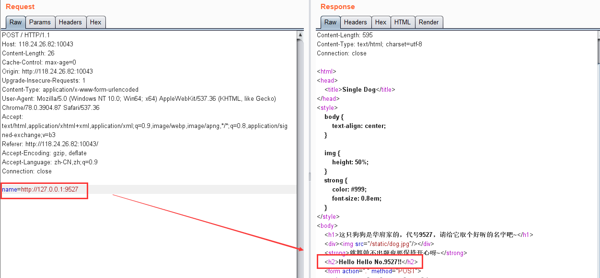
根据返回的信息：No.9527，对应源码部分：
1 | if len(r.Header["Logic"]) > 0{ |
我们要得到藏在内网的flag，就肯定要构造出头部Header的Logic字段
这就需要利用到go语言的CVE：CVE-2019-9741 ，简单来说，就是go语言的SSRF存在头部CRLF注入，有点里类似于我们再PHP中利用SoapClient来构造任意包，即\r\n，我们可以利用这个来任意构造头部字段Logic
传入：
1 | http://127.0.0.1:9527/? HTTP/1.1\r\nLogic:1 |
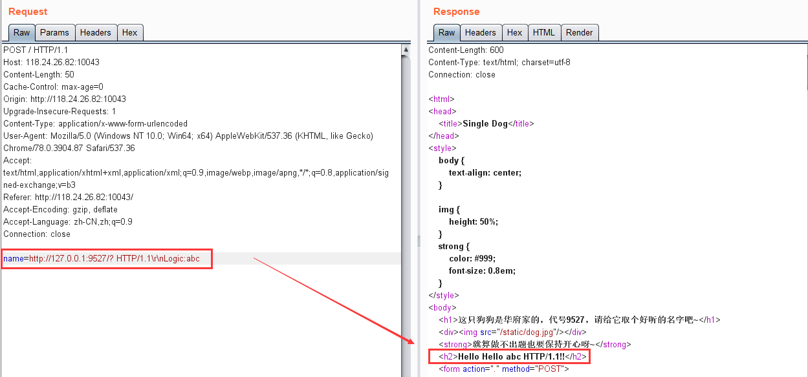
可以看到，成功把头部Logic的值输出出来了
最后就是考虑如何输出flag，想到了题目的hint：ssti
go语言的ssti：
1 | {{.对象名}} |
前面已经提到头部*http.Request的Header中，Header在结构体名为MyRequest
最终获取flag的payload：
1 | http://127.0.0.1:9527/? HTTP/1.1\r\nLogic:{{.MyRequest}} |
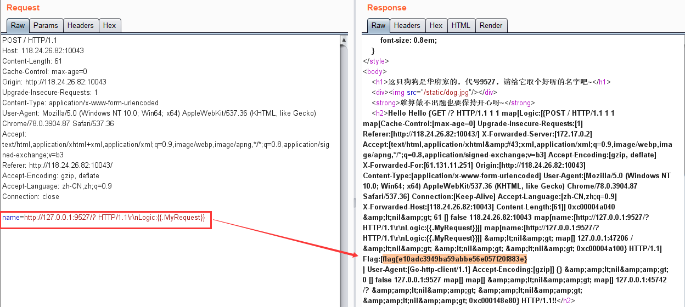
easyxss
xss一直是一个头疼的点，这次复现也是硬着头皮套payload，然后查查资料，尽量把自己理解的写下来
首先，题目就告诉我们了设置了HttpOnly，flag在Cookie中
什么是HttpOnly呢，可以参考：https://www.cnblogs.com/0nth3way/articles/7087557.html
简单的来说，HttpOnly一定程度上可以防止xss，一旦服务器在cookie中设置了HttpOnly，我们就没办法用最传统的js访问cookie的方法：document.cookie来访问cookie
回到题目上，一个留言界面，我们随便试着xss：<img src=# onerror=alert(/xss/)>
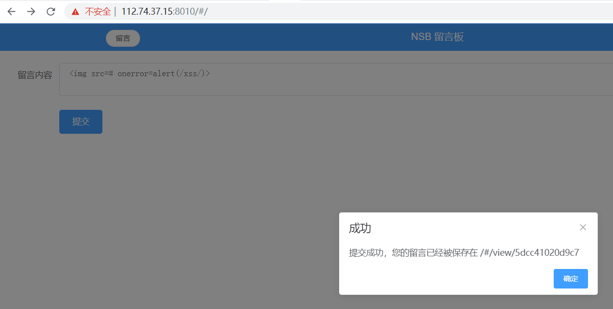
访问/#/view/5dcc41020d9c7
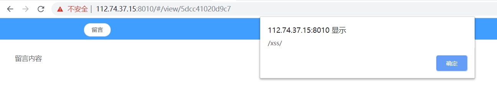
能成功弹框，但是cookie就不行了，抓包一下
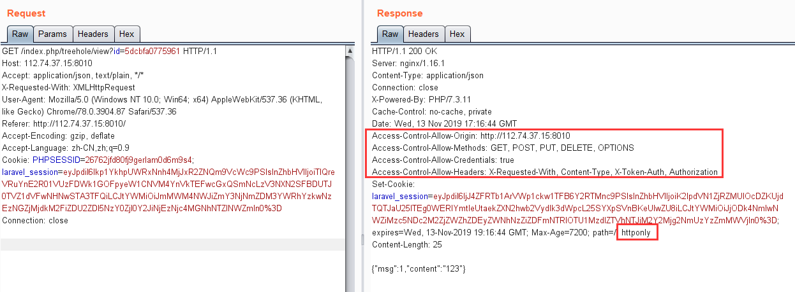
发现设置了CORS，cookie中设置了httponly
那么什么又是CORS呢，具体可以参考：https://developer.mozilla.org/en-US/docs/Web/HTTP/CORS
这里首先设置了：
1 | Access-Control-Allow-Origin: http://112.74.37.15:8010 |
说明对网站资源的访问只允许来自http://112.74.37.15:8010，即服务器自身（同源）下的请求，关于同源策略可以参考：https://developer.mozilla.org/zh-CN/docs/Web/Security/Same-origin_policy
另外Access-Control-Allow-Headers: X-Requested-With说明了我们可以通过XHR请求来访问网站
我们知道js的自用类XMLHttpRequest是用于在后台与服务器交换数据。如果设置XHR请求网站，那么请头部必然会带有：Origin:http://112.74.37.15:8010，则会被服务器视为同源访问
那么，既然flag在cookie中，而前面就说到，由于httponly设置的缘故，我们是无法直接用js直接访问到cookie的，所以我们只能寻找哪个页面有没有显示出cookie信息，很显然，在/index.php/treehole/view?id=
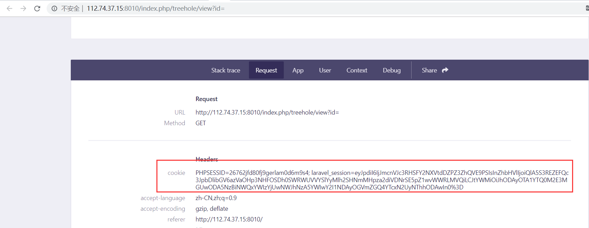
那么到这里思路就很清晰了，通过XHR来请求服务器的/index.php/treehole/view?id=，获取cookie信息，编写请求代码：
1 | <script> |
这样，就能请求到页面，但是我们要得到响应内容，就必须将内容带到自己的vps上，这就需要利用到一个重定向：location.href
1 | <script> |
所以，最终的payload：
1 | <img src=# onerror="xmlhttp=new |
留言后，即可在vps的对应端口上监听获取flag
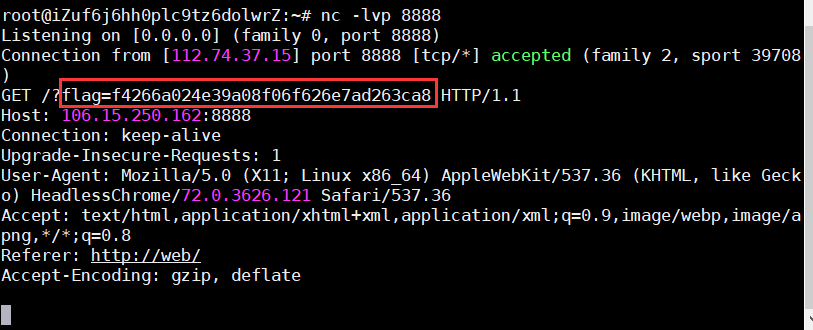